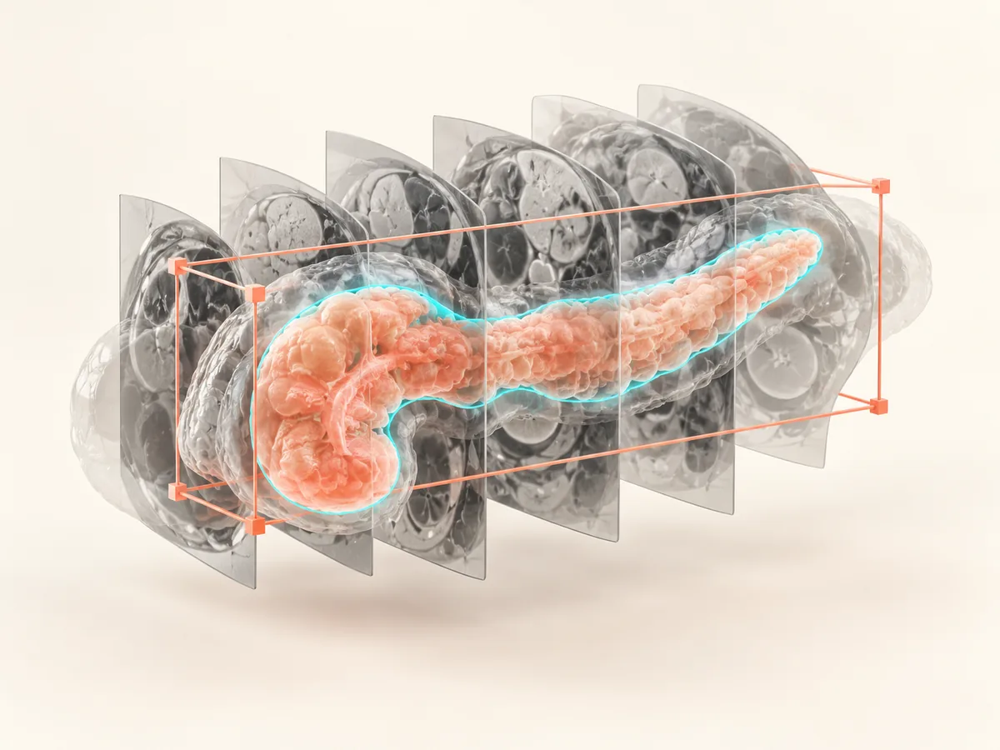
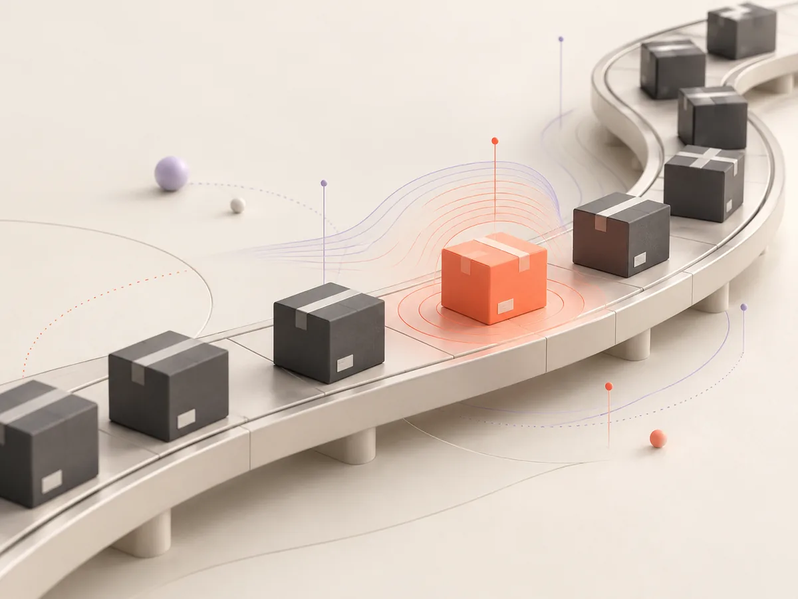

01 / 精选项目
把新想法，
做成可运行的系统。
01 · FEATURED↗
MarketPilot
基于 LangGraph 的多智能体商业决策系统。通过动态 Skill、Critic Agent 与主动记忆修剪，让决策过程可回溯、可纠错。
02 · AGENT SYSTEM↗
校园双碳平台
用 MCP、Hybrid RAG 与多模态审核连接自然语言、业务工具和主动风控。

03 · RESEARCH↗
胰腺影像智能分析
通过 LLaVA-Med 微调与形态感知定位，为现有 CT/MRI 分割模型提供可插拔先验。

04 · DATA SCIENCE↗
物流理赔风控
以动态阈值、SMOTE 与 LightGBM 处理 19 万级长尾运单，获 MathorCup 全国一等奖。
02 / 关于
把 AI 做成可靠、可解释、真正可用的系统。
教育
东华大学 · 软件工程
GPA 90.4 / 100 · 专业前 5%
方向
LLM Agents · RAG · AI-Native Software
Computer Vision · Data Intelligence
技术
Python · Java · LangGraph · LangChain
FastAPI · Neo4j · Docker · Linux
03 / CONTACT
一起做点新的。↗